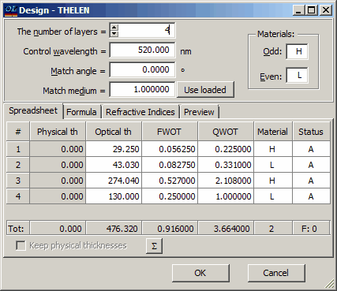
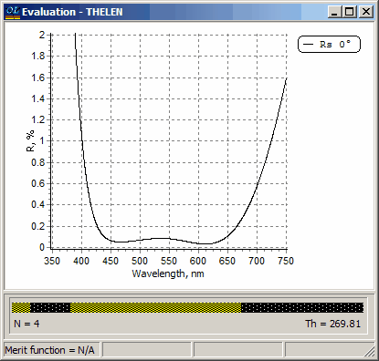
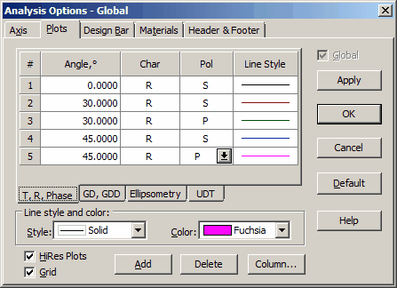
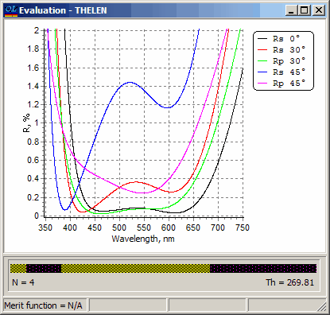

Exercise 4. Four layer antireflection coating: normal and oblique incidence
Exercise 4. Four layer antireflection coating: normal and oblique incidence
In this exercise (Problem Directory EX4) we shall evaluate a four-layer AR coating described on the page 91 of the book “Design of Optical Interference Coatings” by Dr. A.Thelen. The design formula is 0.225H 0.331L 2.108H 1.0L beginning with the substrate. The value of the control wavelength for referring quarter-wave units H and L is 520nm.
In SF Mode you need to use Import Problem Directory command (File Menu).
Load GLASS substrate and ZRO2 and MGF2 layer materials.
Open the Design database and investigate a file with the name THELEN. Required thicknesses of the layers are entered into the QWOT column.
The Design Edit Window looks as follows:

Open Evaluation window and with the help of Options dialog set the x-axis range from 350 to 750nm and the y-axis range from 0.0 to 2% and set reflectance as a characteristic to plot. The results can be compared with the plot presented in Dr. A.Thelen’s book. Note that the results are slightly different because we have specified the refractive index for the H material (ZRO2) as equal to 2.1 while Dr. A.Thelen used a value of 2.08 for the high refractive index.
Resulting Evaluation Windows should look as follows:

Go again to the Plot tab of the Analysis options dialog and add four plots using the Add button. Set 300 angle of incidence for the second and third plot and 450 angle of incidence for the fourth and fifth plot. Specify P-polarization state for the third and fifth plot in the Pol column. Also specify different colors for different plots using the Color drop-down list. The Plot tab of the Analysis options should look as follows:

After pressing the OK button you will have five plots in the Evaluation window.

Using Plot tab of the Analysis options dialog experiment with different styles and colors of the plots presented in the Evaluation window.